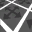

Level Editor
About
Level Editor is used to create locations

Interface
| Button | Description | Note |
|---|---|---|
| Clear | Clear scene | |
| Load | Load an object into a new scene | |
| Save | Save object | |
| Save as... | Save the object as | *.object *.lwo |
| Open Recent | Open recent | |
| Import... | Imports the model into the scene | |
| Optimize Motions | Goes through all the bones in the animation and optimizes their animation channels (e.g., position, rotation, scale) by removing redundant keyframes | |
| Batch Convert... | ||
| Export | Export the model to formats | *.ogf *.omf *.obj *.dm C++ |
| Quit | Exiting the program |


Top Bar
| Icon | Name | Description |
|---|---|---|
| Undo | Undo the last action | |
| Redo | Repeat the last action | |
| New Scene | Clear/New Scene | |
| Open Level | Open Level | |
| Save Level | Save Level | |
| Build CFORM | Build CFORM | |
|  | Build AI-Map | Build AI-Map |
| Build Game Graph | Build Game Graph | |
| Start Play in Editor | Start Play in Editor | |
| Play in Editor Settings | ||
| Reload Configs | ||
| Build and Make | ||
| Play Level | ||
| Play Level in Game | ||
| Open ‘gamedata’ folder | ||
| Hint | ||
| Volume | ||
| Phys Simulation | Activates the physics simulation of the selected object(s) | |
| Use Pos | Use the position of the selected object when physics simulation is active. The position of the object will be applied when simulating physics | |
| Preference | Preference |